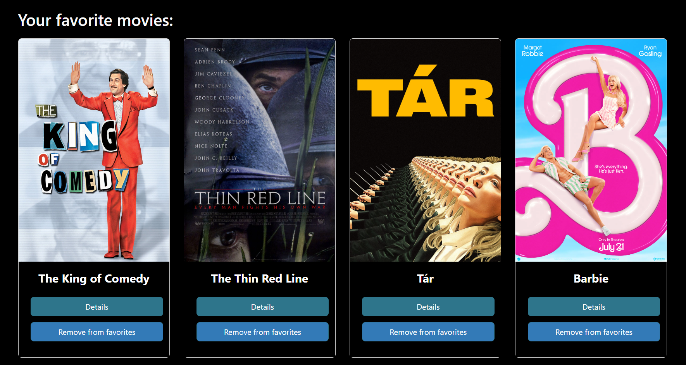

Case Study: Fletnix full-stack application
Overview
Fletnix is a single page web app, developed using the MERN stack. The app provides users with access to a small library of movies, where each entry is composed of an image and information about movies, directors, and genres. Users are able to create an account, browse through the library, update their personal data, and create a list of favourite movies.
Purpose & Context
Fletnix was a personal project I built as part of my web development course at CareerFoundry to demonstrate my mastery of full-stack JavaScript development. It was my first exposure to server side programming as well as React.
Objective
The aim of the project was to create an entire web application, including the API, the database, and the front-end from scratch. This gave me a hands-on understanding of how web applications work and how each component interacts with the others.
Approach
Server-Side
I created a RESTful API using Node.js and Express, that interacts with a non-relational database (MongoDB). The API can be accessed via the CRUD (Create, Read, Update, Delete) HTTP methods like GET or POST, and returns information in JSON format. In addition, I implemented server side authentication and authorisation using HTTP authentication and tokens through the Express library Passport. All of these endpoints were thoroughly tested using Postman, and once functional the database was hosted on Mongo Atlas, and the API was hosted with Heroku.
Client-Side
Once the backend was ready, I started to build the platform on which users would be able to interact with the API. Fletnix is a single-page application (SPA), developed with React. By making the app an SPA, I had to rely on React components and state in order to navigate the user through the various interfaces the site offers. Users can thus sign-up, login, browse movies, view and update their profile, add and remove movies to a list of favourites; all within a single html file.
Challenges
The most challenging part of this project for me was the front end with React. I found it extremely confusing at first and it was especially difficult for me to understand how React props and state work. In order to understand the framework better, I built two or three smaller, much simpler applications. With regards to the back-end, getting the endpoints to work properly was also quite challenging.
Conclusion
The Fletnix project provides users with a fully functional, custom made application. This project was by far the most ambitious I have yet undertaken on my journey in web development. Even though this project was quite large for a single programmer to undertake, it must be recognised that the functionalities are still quite limited. This leaves room for improvement: perhaps future versions of the film can allow users to enter their own movies to the database, and add additional features, such as reviews and rankings? In any case, the experience and knowledge I gained from this project were invaluable, and I look forward to what comes next in my career as a developer.
Credits
- Role: Lead Developer
- Tutor: Jonathan Nshuti
- Mentor: Treasure Kabareebe